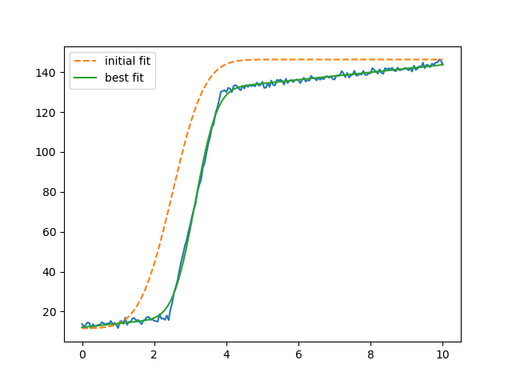

Note
Go to the end to download the full example code
doc_builtinmodels_stepmodel.py¶
[[Model]]
(Model(step, prefix='step_', form='erf') + Model(linear, prefix='line_'))
[[Fit Statistics]]
# fitting method = leastsq
# function evals = 55
# data points = 201
# variables = 5
chi-square = 593.709621
reduced chi-square = 3.02913072
Akaike info crit = 227.700173
Bayesian info crit = 244.216697
R-squared = 0.99897798
[[Variables]]
line_slope: 1.87162383 +/- 0.09318592 (4.98%) (init = 0)
line_intercept: 12.0964588 +/- 0.27606017 (2.28%) (init = 11.58574)
step_amplitude: 112.858576 +/- 0.65391731 (0.58%) (init = 134.7378)
step_center: 3.13494787 +/- 0.00516602 (0.16%) (init = 2.5)
step_sigma: 0.67393440 +/- 0.01091158 (1.62%) (init = 1.428571)
[[Correlations]] (unreported correlations are < 0.100)
C(line_slope, step_amplitude) = -0.8791
C(step_amplitude, step_sigma) = +0.5643
C(line_slope, step_sigma) = -0.4569
C(line_intercept, step_center) = +0.4269
C(line_slope, line_intercept) = -0.3093
C(line_slope, step_center) = -0.2338
C(line_intercept, step_sigma) = -0.1372
C(line_intercept, step_amplitude) = -0.1173
C(step_amplitude, step_center) = +0.1095
# <examples/doc_builtinmodels_stepmodel.py>
import matplotlib.pyplot as plt
import numpy as np
from lmfit.models import LinearModel, StepModel
x = np.linspace(0, 10, 201)
y = np.ones_like(x)
y[:48] = 0.0
y[48:77] = np.arange(77-48)/(77.0-48)
np.random.seed(0)
y = 110.2 * (y + 9e-3*np.random.randn(x.size)) + 12.0 + 2.22*x
step_mod = StepModel(form='erf', prefix='step_')
line_mod = LinearModel(prefix='line_')
pars = line_mod.make_params(intercept=y.min(), slope=0)
pars += step_mod.guess(y, x=x, center=2.5)
mod = step_mod + line_mod
out = mod.fit(y, pars, x=x)
print(out.fit_report())
plt.plot(x, y)
plt.plot(x, out.init_fit, '--', label='initial fit')
plt.plot(x, out.best_fit, '-', label='best fit')
plt.legend()
plt.show()
# <end examples/doc_builtinmodels_stepmodel.py>
Total running time of the script: ( 0 minutes 0.146 seconds)